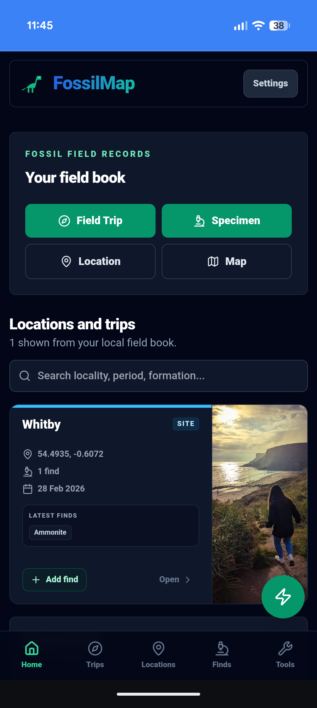
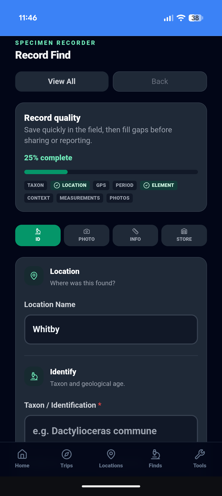
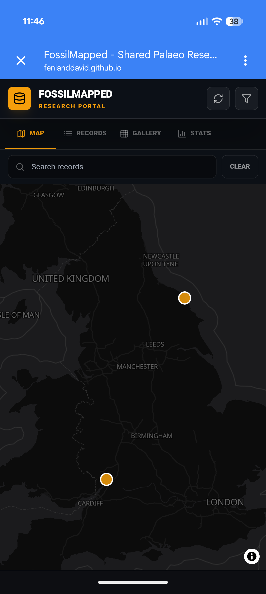

Field dashboard
Trips, locations, finds, tools and backup in one local-first workspace.
Every fossil tells a story. FossilMap makes sure the full story gets recorded.
Capture GPS, photographs and geological context in the field. Build a collection you can be proud of and contribute to the UK's growing fossil record when you're ready.
FossilMap helps collectors record better finds. FossilMapped helps those shared records become useful research data.
Free · No account · Works offline · Your data stays on your device
Record privately first. Share only when you are ready.

FossilMap is built around how fossil recording actually works in the field. Start with a known locality or field trip, record specimens with GPS, photographs and geological context, then generate a structured field report when needed.
Simple enough for a first fossil. Structured enough to preserve useful scientific context.
Add a known site — beach, quarry or cliff section — with geological context, SSSI flags and BGS formation lookup from your GPS position.
Start a session at a locality. All finds recorded during the trip are linked to the session — building a full, dated field trip record.
Quick GPS capture in the field. Add taxon, period, formation, photographs and taphonomy at the car or at home. Each specimen gets a unique reference code.
Generate a printable PDF field report. Export your full collection as a JSON backup. Share selected specimens to FossilMapped when your record is ready.
Recording where and how a fossil was found preserves information that can never be recovered once it's lost — and turns a personal find into a long-term record.
Once a fossil is removed without a record, that information is gone for good. GPS coordinates, formation and find context take seconds to capture in the field — but cannot be reconstructed afterwards.
Amateur collectors recover significant material from UK sites every year. Properly documented finds can help fossil groups, local recorders and future collectors understand what was found and where.
Collections change hands. Specimens are donated, sold, dispersed. A documented record — with specimen code, GPS, photographs and stratigraphy — survives the specimen itself.
More than a map. FossilMap helps collectors record better finds. FossilMapped helps those shared records become useful research data.
From a first find on a family beach trip to a serious long-term collection — FossilMap works at every level, and your records contribute to the wider picture.
Whether this is your first find or your five-hundredth, the record you make now is the one that lasts. FossilMap makes good recording simple — quick enough in the rain, detailed enough for a serious collection.
FossilMapped brings together shared fossil records with provenance — GPS coordinates, formation, stage, element and photographs. The database grows with every collector who chooses to share.
FossilMapped supports record status tiers, helping separate community-submitted records from verified and research-grade records. Every shared find starts as a community record and may advance with further review.
Submitted by collectors and shared to the public fossil database. Visible to all, open for community engagement.
Reviewed and confirmed by trusted verifiers. Taxon, geological context and provenance have been checked.
High-quality records with strong supporting evidence. Suitable for citation, long-term research and institutional reference.
Every shared find adds to the growing public record of Britain's fossil heritage.
Statistics update as new finds are recorded and shared.
FossilMap helps you capture the details that are easy to forget in the field — not just the name of the fossil, but the place, photographs and geological context that make the record useful later.
Quality indicators help researchers see which records contain the strongest supporting information. FossilMap tracks completeness across the fields that matter most — so a record that includes GPS, taxon, formation, photographs and measurements is clearly distinguishable from one that does not.

Start a field trip, log finds as you go, check tides before you head to the foreshore, and export a structured PDF at the end of the day.
Open a session at a locality and add finds as you recover them. Notes, photographs and GPS — tied to the trip record in real time.
Use BGS mapping to help identify the geology beneath your find location. Formation, period and geological context can be added directly from your GPS position.
One tap logs GPS position immediately. Add taxon, period and context later — at the car or at home. The location is never lost.
Generate a complete PDF from the session — suitable for club records, planning condition documentation or personal archives.
UK Environment Agency gauge readings built in. Know when the water turns — before you leave home. Includes foreshore safety guidance.
Example records shown. Browse the live dataset at FossilMapped.
FossilMapped is the public research portal for shared UK fossil records. Only records explicitly shared from FossilMap appear here — community-submitted, verified and research-grade finds from collectors across the country.
Every shared record can be explored through a spatial map, record list, visual gallery, analytics dashboard and export tools. Records receive a permanent reference, citation tools and BibTeX download for academic use.
Nothing is shared automatically. FossilMap stores everything locally. Sharing to FossilMapped is an explicit, specimen-by-specimen choice — when the record meets your own standard.

A good fossil record helps you understand your own finds, preserve provenance and share useful information when the record is ready.
GPS-referenced finds help show where fossils occur across formations, periods and regions.
Formation, member and bed details keep each fossil connected to the layer it came from.
Significant finds can be followed up if the collector chooses to make contact possible.
Shared fossils receive stable references and links, so the record can be found again later.
Completeness indicators, protected-site flags and provenance help keep important details together.
Element, preservation mode, taphonomy and find context help explain what the fossil actually represents.
Specimens, GPS, photographs and locality data are stored in your device's own database. Nothing is uploaded in the background.
Everything you need to know before you install.
Yes — FossilMap is a Progressive Web App (PWA). On iPhone, open in Safari and tap Share → Add to Home Screen. On Android, your browser will prompt you to install. No App Store or Google Play required.
No. There is no account, no login and no email required. Everything is stored locally on your device. You can start recording immediately after installing.
Specimen recording, locality management, field trip tracking and collection browsing all work offline with no signal. Tide gauge readings and map tiles require a connection, but tiles are cached after your first visit to an area.
Yes. FossilMap captures period, stage, formation, member, bed, primary lithology, exposure type, element, preservation mode, taphonomy, find context, GPS coordinates and photographs — the details that make a fossil record useful long after the find is made.
FossilMapped is the public research portal for shared UK fossil records. It includes a spatial map, searchable record list, visual gallery, analytics dashboard, and CSV/JSON export. Shared fossils receive a permanent HRID reference, citation tools and BibTeX download. FossilMapped supports Community, Verified and Research Grade record tiers, and collectors who opt in can be contacted directly for significant finds. Only records explicitly shared from FossilMap appear here — nothing is shared automatically.
Any kind. Common taxa are available as quick picks but the taxon field accepts free text. Preservation, element, taphonomy and find context work for any specimen type.
Use the backup export in Settings before switching. FossilMap exports your full record — all specimens, localities, field trips and photographs — as a JSON file that restores on your new device. Nothing is on a server, so the export is the only copy.
FossilMap is an independent platform. If you are a researcher, museum or institution interested in the dataset or a formal partnership, please use the contact page.
Whether this is your first find or your five-hundredth, the record you build today is the one that lasts — for your own collection, and potentially for science.
No account. No subscription. Your data stays on your device.
Record privately first. Share only when you are ready.